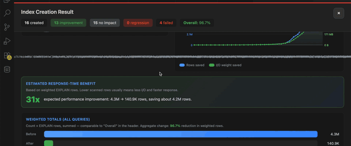

Pillar
Query Profiler
Profile a single statement end‑to‑end and read the per‑stage timing breakdown.
Overview
The profiler wraps your statement with the server's profiling facility and reports the time spent in each stage — parsing, optimization, sending data, and so on.
When to profile
Profile when QO can't explain why a plan is slow. Stage timings often reveal the real cost (sorting, network) better than EXPLAIN alone.
Start a profiling session
Use the Profile CodeLens above a statement, or run SQL: Start Profiler. Pick the number of runs to average noise out.
Screenshot placeholder
Read and interpret results
Stages are sorted by elapsed time. Click a stage for the matching SHOW PROFILE row and links to related counters.
Screenshot placeholder
Demo: profiler session

Tips
- Run profiling on a warmed cache for repeatable numbers.
- Compare two profiles side by side after a tuning change.
Was this page helpful?
Your feedback stays on this device.